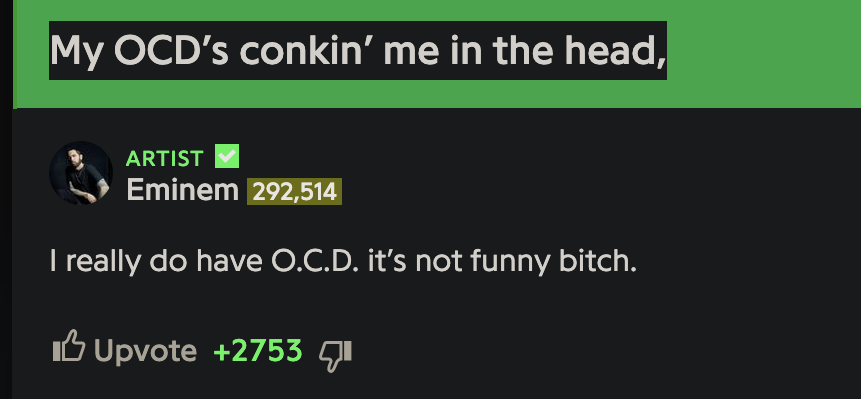
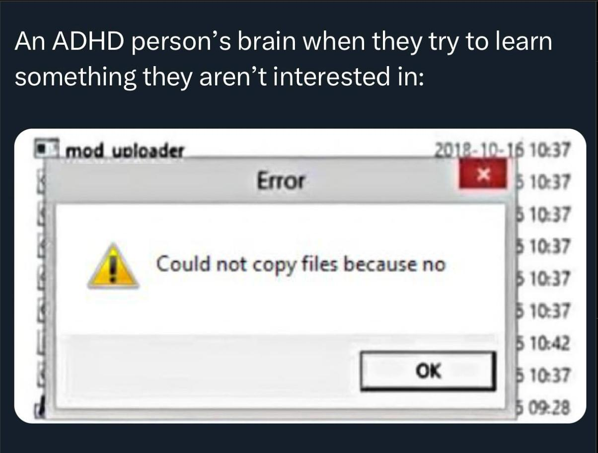
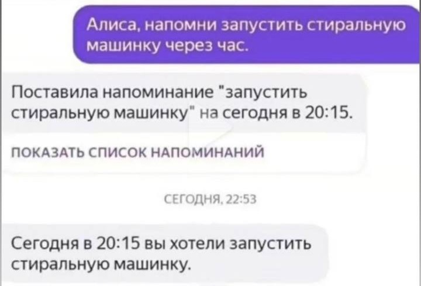
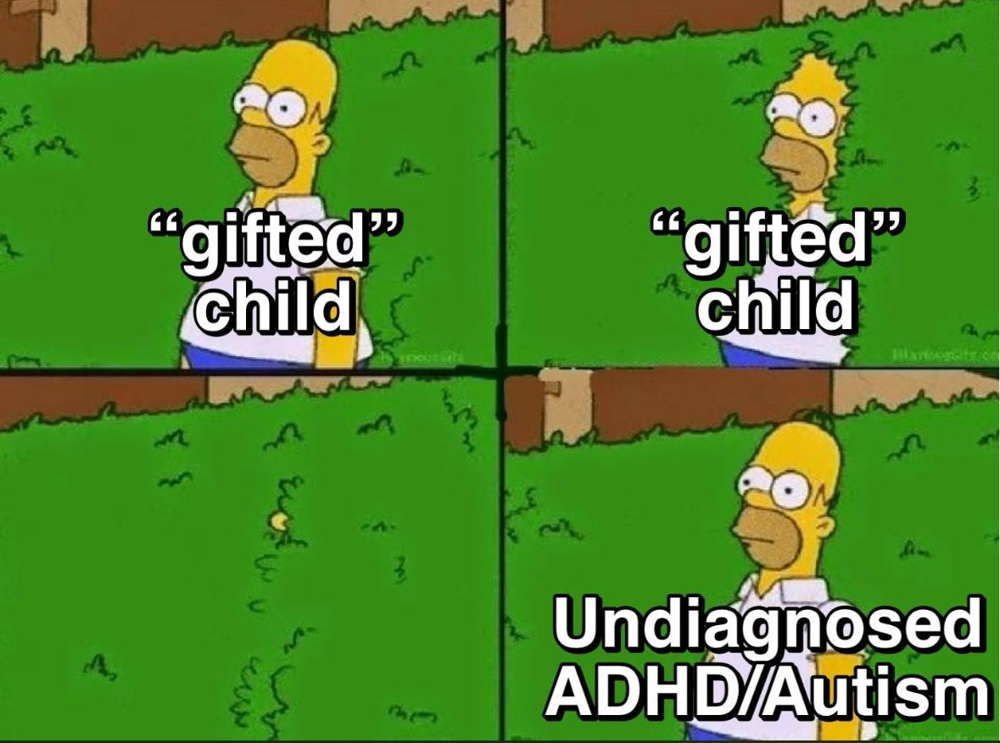
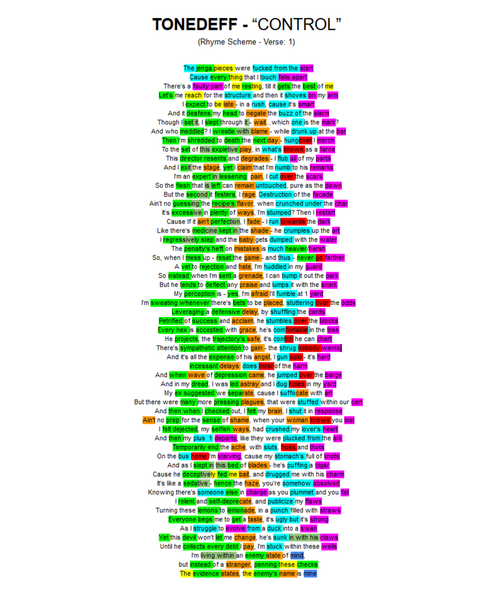
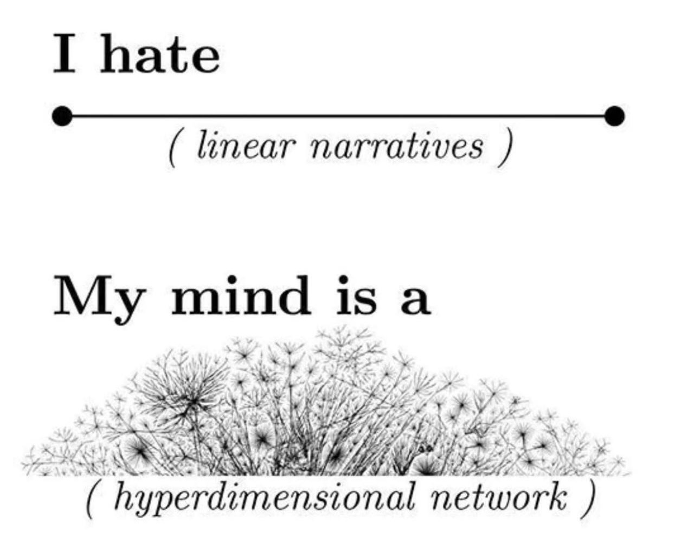

Привет, Саша!
Рубрика «деньрожденный текст о музыке» в этот раз снова не только о музыке. Этот пост — ещё и о нейроотличиях вроде синдрома дефицита внимания.
Интересно разобраться: каково живётся и какие песни получаются, когда мозг работает не как у большинства людей?
Всегда ощущал, что у любимых мной рэперов есть что-то общее. Теперь думаю, что им всем, возможно, поставили бы схожие диагнозы. Да возможно, и мне тоже, поэтому их музыку и люблю. И поэтому что-то могу рассказать «изнутри».
Естественно, необходим дисклеймер:
Тут важно учитывать, что не являюсь экспертом. Не надо ставить по этому тексту уверенные диагнозы, за таким лучше обращаться к специалистам.
Cпециалисты, впрочем, тоже понимают далеко не всё. Человечество попросту ещё не разобралось в работе мозга как следует. Даже с терминологией есть сложности, поэтому местами вольно с ней обращаюсь.
А пока наука не может полностью объяснить тему, считаю, что полезна даже информация от менее компетентных людей. Таких, как я и рэперы!
That's how it starts
Што могут рассказать о ментальных проблемах люди из хип-хопа, где типичный хит звучит как «у меня проблема — Lambo или Ferra»? Зачем изучать тему через них? Ну, для начала отмечу понятное: рэперы бывают разные, и некоторые зачитывают совсем не про Ламборгини.
А ещё важнее, что главная тема в творчестве типичного рэпера — это он сам. Эти бесконечные автобиографии могут утомлять. Но когда хочется понять «как живётся с определённой ментальной особенностью», тут как раз очень полезно, когда человек описывает её в деталях. Даже если он сам не знает, как она «правильно» называется.

Про ментальное здоровье (в широком смысле слова) в хип-хопе зачитывали примерно с самого начала. Важный ранний хит «The Message» (1982) — песня о жизни в неблагополучном месте («кругом битое стекло и крысы, денег выбраться отсюда нет»). И уже там припев «Don't push me, cause I'm close to the edge / I'm trying not to lose my head» упоминает не просто сложности жизни, но и их влияние на психику.
Очень подробно эту тему развила группа Geto Boys в своём главном хите «Mind Playing Tricks on Me» (1991). Он уже целиком о том, как жизнь в гетто вызывает ментальные сложности: бессонницу, тревогу, суицидальные мысли. И само название песни подчёркивает, что человек не вполне понимает и контролирует свой же мозг.

Затем, когда люди стали удалять больше внимания терапии, подобного стало только больше. Альбом британца Dave «Psychodrama» изображает терапевтическую сессию, Logic назвал хит «1-800-273-8255» по номеру линии предотвращения самоубийств, про рэпера NF с депрессией уже писал.
Дальше сосредоточусь на явлениях вроде СДВГ и ОКР, от которых зависит, на чём человек сосредотачивается. Думаю, что они сказываются на песнях, даже когда сама песня совсем о другом.
May I have your attention, please?
Ранее в посте про Эминема уже упоминал мельком, что его увлечение созвучиями выглядит обсессивно-компульсивным расстройством. Но тогда это звучало фигурой речи.
А позже обнаружил, что на сайте Genius он сам прокомментировал собственную строчку про ОКР:

Возможно, это многое объясняет и про Эминема, и не только.
Люди с ОКР могут бесконечно намывать руки или расставлять предметы в доме симметричным образом. Они знают, что это бессмысленно. Но они НЕ могут этого НЕ делать.
Я давно люблю рэперов, которые расставляют созвучия примерно с той же тщательностью. Эминем — далеко не единственный из них. Скажем, сколько Horus продумывает свои «страничках/спич/напичкан/дичь/притчей/типичны/лично/тепличных»?

Юный рэпер просто решает «в хип-хопе любят рифмы, буду накручивать их максимально»? Или же его мозг и так постоянно пытается расставлять слова наилучшим образом, поэтому он в хип-хопе и оказывается?
Самые упорные ещё и добавляют самоограничения. Дядя Женя ухитрялся сочинять впечатляющие песни, вообще не используя в текстах букву «р». Считается, что это из-за картавости. Но думаю, что это было ещё и решением вроде довлатовского «никогда не начинать слова в предложении с одной буквы».

Дать самому себе ограничение — тоже интересный челлендж в духе ОКР. А можно ли сочинить удачный текст на баттл без мата? А что, если переплести свои лучшие мысли со строками Бродского? А получится ли составить всю песню из реплик разных персонажей так, чтобы они складывались в биографию героя? Что, зассал, не пацан?
Некто скажет: «Всё это пустое жонглирование словами, которое может продолжаться бесконечно и лишено ценности. Словно сочинители сызмальства сутками старательно сортировали созвучия, сочетая самые-самые, скребли сусеки, стремились стать суперпрофи, совершенствовались, состязались — слушатели, со своей стороны, скисали со скуки... идея понятна, да? Так можно подбирать тексты километрами, и они быстро перестанут кого-либо вдохновлять».
Ёлы-палы, но зачем это рассматривать как единственный критерий в отрыве от остального? По-моему, такой «ОКР-подход» сияет, когда дело не сводится только к нему. Когда рифмы усиливают и без того интересную песню, а не оказываются единственным, что в ней есть. Вот тогда они могут помочь рэперу прославиться. И если такой подход действительно связан с особенностями работы мозга — получается, у рэпера с ОКР есть преимущество перед другими.
Можно подумать «для них расстройство оказывается не проклятием, а благословением». Но думаю, что оно всё равно будет и проклятием тоже. Если можешь удивительно стройно раскладывать звуки, но НЕ можешь этого НЕ делать, то не вполне контролируешь свою жизнь. И наивно было бы предполагать, что проявляться всё будет только в сочинительстве, а остальную жизнь не затронет.
Ранее тот же Эминем говорил об этом в малозамеченной песне «Legacy». Мол, мой мозг работает не как у всех, и в школе это очень портило жизнь — но без этого не смог бы так хитро соединять слова, а в итоге не стал бы успешен. И в другой его песне «Not Afraid» есть игра слов как раз о том, что дар и проклятие могут быть одним и тем же: «Like a "fuck you" for Christmas, his gift is a curse».
Attention is all you need
ОКР — не единственное подобное состояние, упомянутое в хип-хопе. СДВГ ещё в 2011-м стал названием песни у Кендрика Ламара, в уходящем 2025-м — у фрешмена Madk1d (и вне хип-хопа — у французского мультиинструменталиста Igorrr). Но дальше всех зашёл Джойнер Лукас. Сначала он назвал по своему диагнозу весь дебютный альбом «ADHD» (2020). А теперь, в 2025-м, выпустил сиквел «ADHD 2». Вот главная песня с первого альбома:

Жанр тут подан интересно уже во вступлении: полторы минуты сплошного речитатива постепенно становятся напряжённее и доходят до «взрыва», кто ещё так делает? Но до собственно СДВГ дело доходит уже в основной части клипа, где даже видеоряд призван «показать мир глазами Джойнера». Герой снят вообще без монтажных склеек — но контекст постоянно переключается, а камера непрерывно двигается. Смотреть «как это вообще снимали» тоже интересно.
Джойнер — это не какая-то «соевая снежинка», которой многие сказали бы «напридумывал себе диагнозов, нет чтобы мужиком быть». Во многом это как раз «мужицкий рэпер», заявляющий о своей крутизне. Но при этом так же прямо заявляющий: «У меня СДВГ, это не какая-то выдумка, это очень сказывается на моей жизни, и вы понятия не имеете, каково быть мной».
- Есть на этих альбомах песни на «обычные» темы вроде денег, но между них проходит пунктиром основная тема. Например, в клипах на песни с «ADHD 2» он зачитывает то о неспособности заснуть без фонового шума, то о победе тревожности над ним.
- На совместной песне с Logic он сэмплом добавил справочную информацию о том, как подверженными СДВГ считали только мальчиков, «потому что их воспринимают как шумных и буйных».
- И иронично продемонстрировал типичную позицию окружающих в ските, где по сюжету ему звонит Крис Такер: «Чувак, сколько можно тянуть с выпуском альбома? Харош оправдываться своим СДДВГ. У моей мамы тоже СДВГ, она этим не отмазывалась, чтобы лениться».
Я не удивился, когда Джойнера позвал сделать дуэт тот же Эминем. Логично, что они сошлись: например, оба порой переходят на сверхскоростную читку, да и мой вопрос выше «кто повышает напряжение в речитативе полторы минуты подряд» был не риторическим. Для подобного требуется долго репетировать скоростные куплеты. Это однообразное занятие для людей обычно довольно скучно...
...с одним исключением: когда человек зациклен на подобном. И тут интересно, что у СДВГ, как и ОКР, вполне встречается «зацикленность».
«Человек с синдромом дефицита внимания» звучит так, словно он никогда не сосредотачивается ни на чём. Но на самом деле порой наоборот: при СДВГ бывает гиперфокус, когда внимание может концентрироваться на вроде бы скучной теме очень интенсивно и долго, и у других людей так не получилось бы. Это может помогать, например, при рисёрче.
А откуда тогда взялся «дефицит»? Сложность тут не в «отсутствии внимания», а в сложности управления им. Мозг словно «сам решает», на чём именно сфокусироваться. И переключить его на «нужное» сложнее, чем другим людям.
СДВГшник, который по чему-то упоролся, может достигнуть в этом удивительных высот. Но при этом может не справляться с вещами, которые кажутся окружающим простыми.
Так что для рэпера СДВГ, как и ОКР, может оказываться одновременно благословением и проклятием. Это очень мешает жить, но это же и выделяет на фоне других.
Яркий пример — та же песня Джойнера «ADHD». Он говорит там про обе этих стороны: начинает с «It kinda feels like I'm dying on the inside», но быстро переходит к «Maybe I'm just everything that you're missing».
The way I am
Знаком на своём опыте с частью ощущений, которые описывает Джойнер. И хотя сам не сочиняю хип-хоп, порой тоже бесконечно шлифую свои тексты, внося прорву правок даже после публикации. И могу залипнуть на внезапной теме, «пока не разберусь как следует» (вроде музыки Судана, ага). А при этом с другими темами, которые пригодились бы больше, порой ощущаю так:

Давно подозреваю у себя СДВГ, но от разных специалистов получал разные ответы, так что уверенно ничего не утверждаю. При этом от одного врача во вроде как приличном месте слышал «да какое СДВГ, это американцы из-за своих выдумок пичкают детей Риталином, а они потом школы расстреливают». Связь скулшутингов с Риталином — это миф, который выдумали в Национальной стрелковой ассоциации США по принципу «не отбирайте наши пушки, давайте что-нибудь другое запретим». Тогда ощутил, какую ерунду могут порой говорить даже «заслуженные специалисты», а по строчке рэпера Logic «killing them with no Ritalin» ощутил, что он с этим мифом тоже сталкивался.
Однако, разбираясь с темой, пришёл к некоторым общим выводам, в которых уверен сильнее, чем в конкретном диагнозе. Сейчас интернет выглядит так, словно одна половина людей заявляет «у нас всех СДВГ», а другая — «да вы все лентяи и выдумали отмазку». Что тут могу в целом сказать?
1.
Решительно требуется признать: мы попросту ещё мало в этом понимаем. Наука пока толком не разобралась, как работают внимание и мотивация. Например, если говорить про «лень», какой научный термин вообще соответствует этому бытовому понятию?
Остаётся предполагать, что представления ещё сильно дополнятся. Возможно, понятия вроде «СДВГ» начнут звучать так, как сейчас звучит «хворь»: мол, люди так про всё подряд говорили, пока не разобрались нормально. А нынешние интернет-споры об этих понятиях начнут звучать как спор пещерных людей «Земля круглая или квадратная», где оба спорщика согласны «разумеется, она плоская».
В общем, не стоит слишком цепляться за конкретные термины вроде «СДВГ», они ещё будут пересмотрены. Лучше посмотреть глобальнее:
2.
Я исхожу из того, что у людей есть различия в работе мозга, сказывающиеся на концентрации. Грубо говоря, у них вырабатывается разное количество нейромедиаторов (это упрощение, но с его помощью удобно представлять ситуацию). При этом отличия могут быть и врождёнными, и приобретёнными.
У людей различаются и другие параметры вроде роста и веса, но это все понимают. И всем ясно, что в баскетболе у высоких людей есть заведомое преимущество. А вот нейромедиаторы «снаружи» не видны. И людям ошибочно кажется, что в ситуациях вида «написать контрольную работу» или «не забыть запустить стиральную машину» все в равных условиях. Впрочем, и противоположные ошибки с ложной диагностикой наверняка тоже случаются.

3.
Сам факт различий не означает «мы в домике, у нас СДВГ и от нас ничего не зависит, не будем прикладывать никаких усилий».
Попасть в NBA с низким ростом маловероятно. Но на дворовом уровне возможно выигрывать в баскетбол, тренируясь больше других. Так и при нестандартной работе концентрации за что-то не стоит браться, а за что-то можно, но надо быть готовым к повышенной сложности.
Если кто-то говорит «У меня СДВГ, и поэтому для такого-то результата буду прикладывать ещё больше усилий», то получается не «позиция лентяя», а наоборот.
4.
Хотя подобные вещи причиняют много сложностей, где-то они могут играть на руку. Низкорослым людям сложнее в баскетболе, но у них есть преимущество в конном спорте. А про СДВГ или РАС есть гипотезы об их корреляции с программированием. Куча людей хотела бы «войти в айти», но быстро сдаётся, а другие кодят с удовольствием. Что отличает вторых?
Осторожно скажу так: не считаю нейроотличия единственным фактором, но вряд ли тут обошлось без них. И получается, что они дали людям преимущество, которому окружающие завидуют. Как и у некоторых рэперов, это стало благословением. Не случайно часть нейроотличных людей в школе называли «одарёнными» (порой прибавляя «но ленивыми»).

Впрочем, как и у рэперов, даже благословение всё равно будет и проклятием тоже. Если залипаешь на некоторых высокооплачиваемых задачах, это не значит, что все задачи в жизни окажутся такими. И сталкиваясь с другими, ещё будешь биться головой.
Встречал такую аналогию: СДВГ — это словно твой мозг мощный суперкар, но ты в нём пассажир.
Разгоняется так, как другие не могут. Но ты не вполне решаешь, в какую сторону ехать. У тебя словно есть сверхспособности, но нет полноценного контроля над ними.
He's lost control again
А теперь апогей всего, о чём шла речь выше: песня малоизвестного рэпера Tonedeff «Control» c альбома «Polymer» (2016), которую в уходящем году слушал чаще всего.
Больше года назад гуглил схемы рифмовки в каких-то песнях (что само по себе задротское занятие, конечно), случайно наткнулся на это и охренел:

Отмечены разными цветами все созвучные места в куплете. И когда увидел эту расцветку (ещё не слышав песню, не вчитавшись в слова, ничего не зная про автора), сразу ощутил ОХ ЁЛКИ КАКОЙ ОН УПОРНЫЙ И УПОРОТЫЙ.
Тут не строгие рифмы, а созвучия, но... текст на протяжении десятков строк подряд сочинялся так, чтобы у них всех оказывались созвучны и начала, и середины, и окончания. Tonedeff как будто взял длинную фонетическую фразу и подобрал 50 подряд способов заполнить её осмысленным содержанием на определённую тему.
Есть ли ещё рэперы, которые так делают? Такого даже у Эминема не помню.
И этот подход ощущается тщательной игрой в «дженгу». Автор словно громоздит подходящие строки друг на друга, проверяя: сколько сумеет их водрузить, чтобы результат всё ещё был осмысленным монологом, а не рассыпался на набор случайных созвучий без содержания?
Впечатление только усилилось, когда позже услышал песню:

- Сама она длится ДЕСЯТЬ МИНУТ.
- Её собрали из громадного количества дорожек. На слух не определил бы количество, но в документалке Tonedeff показывает их и говорит, что сведением песни занимался ДЕВЯТЬ МЕСЯЦЕВ.
- Музыкально она использует «стену звука»: Tonedeff вдохновился этой концепцией и послушал многое от работ Фила Спектора до My Bloody Valentine и Sigur Rós, чтобы принести этот подход в хип-хоп. Песня завершает альбом, и эта «стена» в её второй половине — кульминация всего предшествующего часа.
- Она включает и скоростной речитатив, и пение, причём Tonedeff исполнил всё сам, а не звал кого-то на подпевки.
Скрупулёзнейшая работа — особенно для малоизвестного рэпера с минимальными бюджетами, который почти всё делает в одиночку. Даже документалку про себя он сам снял и смонтировал, а результат выглядит как у профессиональных режиссёров. Он словно лезет во все стороны сразу, и в каждой хочет сделать круто.

Тут может показаться, что у человека с таким тщательным подходом и в жизни всё тоже будет под контролем. Но если вслушаться, всё оказывается наоборот. «Control» — это песня именно об отсутствии контроля над собой. Он сам использует метафору «дженги»... но в контексте «всё, к чему я прикасаюсь, разваливается».
А во втором куплете прямо говорит: «Мой мозг оказывается моим же врагом. Он перехватывает власть, и мне приходится воевать с ним за управление собой же. И поскольку во мне борются две стороны, не понимаю, кто я в собственном теле: паразит или его носитель?»
«Ленивый» — абсолютно не то слово, которым можно назвать автора такой проработанной песни. И в то же время это песня о пропущенных будильниках и невыполненных обещаниях, о злоупотреблении алкоголем и разрушенном браке, о том, как можно быть одновременно прокрастинатором и перфекционистом.
На своём дебютном альбоме Tonedeff с помощью «необычных умных решений» пытался всем что-то доказать, но хип-хоп-аудитория это не оценила, и популярность не пришла. И на «Polymer» он ударился в перфекционизм уже просто ради самого перфекционизма. Он понимал, что немногие вообще заметят всю эту ювелирную работу и осознают, сколько сил на неё ушло. Но люди, которым такая музыка подходит и которые всё-таки заметили песню «Control», ценят её высоко. В том числе и я.
Отчасти люблю её просто как хорошую песню. Отчасти из-за того, как там проработаны созвучия. А отчасти из-за того, что в некоторых её местах узнаю себя.
Мне знакомы и сложности с самоконтролем, и текстовое задротство. Если бы с контролем было лучше, то этот текст опубликовал бы ровно в твой день рождения, а не затянул с дедлайном. А если бы не задротство, то не провёл бы столько часов за попытками отполировать в нём формулировки. Например, не заморочился бы сделать так, чтобы первые буквы абзацев (не учитывая подзаголовки) вместе образовывали фразу. Мой мозг решил, что так будет интереснее и надо это сделать.